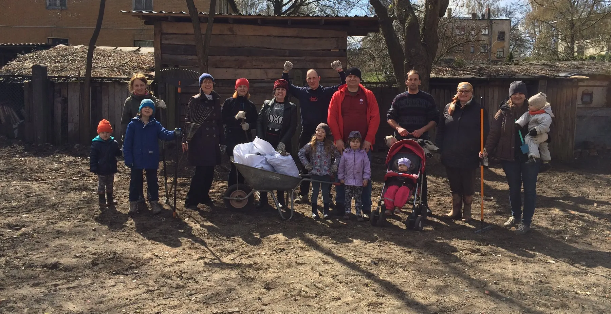

2025
Ķīšezera piknika pļava
Nekoptā ezera krasta vietā tagad ir soli, piknika galdi, zviļņi un bērnu laukums Ezermalas ielā.

Esam vairāk nekā 60 ģimeņu, kas kopš 2015. gada tur rūpi par savu apkaimi: pārstāvam čiekurkalniešu intereses Rīgas domē un darām pašu rokām.
Biedrības ļaudis jaunajā skvērā, 2024